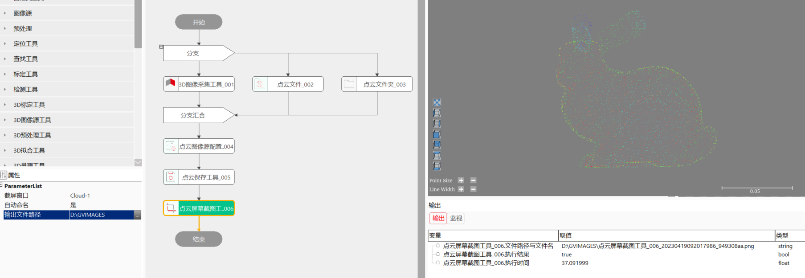

对某一个新增的Cloud视图进行截屏，并保存成png格式的图片。
在3D测量及检测项目中，经常涉及将处理过程中的窗口截图保存下来，以便后续查看，需要涉及点云屏幕截图的问题。

无
| 参数名称 | 参数描述 |
|---|---|
| 文件名 | 当属性窗口中的“自动命名”选择为“否”时，会出现此链接。此处链接提前拟好的命名，可以为单独文件名（如cloud）或带文件夹路径的文件名（如20230302\\cloud） |
| 参数名称 | 参数描述 |
|---|---|
| 截屏窗口 | 选择需要截屏的窗口，比如，Cloud-1等。注意，如果没有Cloud视图，需要新增一个Cloud视图，将要截屏保存图像的拖进Cloud视图中 |
| 自动命名 | 否：需要在数据链接中链接“文件名”，是：系统自定义命名，系统命名规则：工具名+时间+8位ID，如点云屏幕截图工具_005_20230302104136644_f2eab9c4.png |
| 输出文件路径 | 点云屏幕截图的保存地址 |
| 参数名称 | 参数描述 |
|---|---|
| 文件路径与文件名 | 点云屏幕截图的保存文件路径及文件名 |
| 执行结果 | 工具执行结果 |
| 执行时间 | 工具执行时间 |
参见“\Samples\3D\点云\点云图像源配置工具.gvp”。